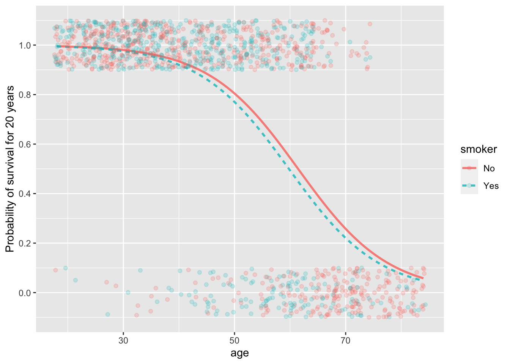
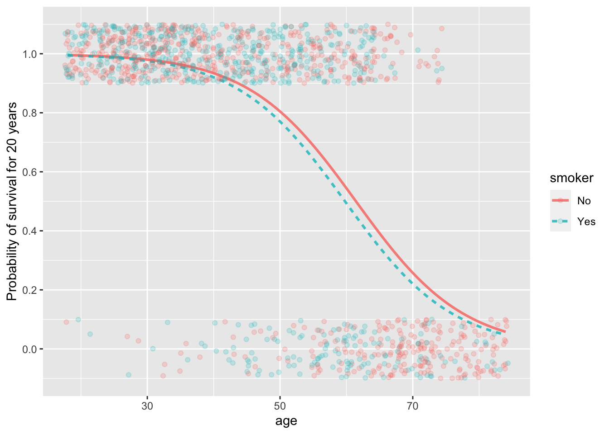

Scale for 'y' is already present. Adding another scale for 'y', which will
replace the existing scale.
Measuring and accumulating risk
Prof. Danny Kaplan
October 24, 2022
A probability—a number between 0 and 1—is the most used measure of the chances that something will happen, but it is not the only way nor the best for all purposes.
Also part of everyday language is the word “odds,” as in, “What are the odds?” to express surprise at an unexpected event.
Odds are usually expressed in terms of two numbers, as in “3 to 2” or “100 to 1”, written more compactly as 3:2 and 100:1 respectively. The setting for odds is an even that might happen or not: the horse Fortune’s Chance might win the race, otherwise not; it might rain today, otherwise not; the Red Sox might win the World Series, otherwise not.
The format of a probability assigns a number between 0 and 1 to the chances that Fortune’s Chance will win, or that it will rain, or that the Red Sox will come out on top. If that number is called \(p\), then the chances of the “otherwise outcome” must be \(1-p\). The event with probability \(p\) would be reformatted into odds as \(p:(1-p)\). No information is lost if we treat the odds as a single number, the result of the division \(p/(1-p)\). Thus, when \(p=0.25\) the corresponding odds will be \(0.25/0.75\), in other words, 1/3.
A big mathematical advantage to using odds is that the odds number can be anything from zero to infinity; it’s not bounded within 0 to 1. Even more advantageous for the purposes of accumulating risk is the logarithm of the odds, called “log odds.” We will come back to this later.
The most familiar use of “odds” is in gambling. For instance, a famous song lyric puts the odds of Valentine winning the horse rate “at five to nine.” Less musically, this odds is \(5/9 = 0.5555\), but the two-number format makes particular sense for keeping track of bets. Five-to-nine describes a bet of one unit. The second number, 9, specifies the amount the gambler is staking on the outcome. On a loss, the gambler loses that stake. On a win, the gambler gets back the stake and, in addition, gets the amount specified by the first number. So a winner at five to nine would leave the racetrack with an extra $5. But on a loss, the gambler leaves $9 behind.
A “bookie” is someone who provides a service. You can go to a bookie to lay a bit. In drama, this might be done by telephone: “Lay $90 on Valentine” is all the gambler needs to communicate. No money has to change hands. On a win, the bookie will return $50 to the gambler. On a loss, the gambler has a debt of $90.
A bookie is not a gambler; he’s an accountant who records numbers. The bookie arranges these numbers so that he makes money. To see this, imagine a horse race including Valentine, Paul Revere, and Epitaph. To start, the bookie specifies odds on each possible outcome, say 5:9 for Valentine, 1:3 for Paul Revere (a favorite!), and 1:2 on Epitaph.
If the bookie has a good nose, about a third of the stakes will be bet on each outcome. If not, as new bets come in the bookie raises or lowers the odds to encourage or discourage bets so that the roughly one-third of stakes are placed on each outcome. Suppose at the end of the day that $500 is staked on each of the three outcomes.
WRONG WRONG WRONG. It needs to work that the winning returned for Valentine has to be less than the stakes on the other horses, and similarly for all horses. So if $100 is bet on Valentine we need $100 staked on the other horses.
Added up, these odds are \(5+1+1=7\) on the top and \(9+2+1=12\) on the bottom. It’s important—for the bookie—that the odds are arranged so that the bottom number is larger than the top number: 12 is larger than 11. Note that this method of adding is simpler than combining fractions. To add the fractions \(1/2\) and \(1/3\) gives \(5/6\). But to combine the odds \(1:2\) and \(1:3\) gives \(2:5\). One more detail is needed for a real-life bookies, taking into account the size of each bet. For instance, a $5 bet at 5:9 would be recorded as 25:45.
Now the race is run. The winner is … well … from the bookie’s point of view it doesn’t matter who wins.
[From The Model Thinker, p. 52]
Gain Framing: You have two options
Option A) Win $400 for certain
Option B) Win $1000 if a fair coin comes up heads and $0 if tails
Loss Framing: You are given $1000 and have two options:
Option a) Lose $600 for certain
Option b) Lose $0 if a fair coin comes up heads and lose $1000 if tails.
Hyperbolic discounting: see pp 52-43
“Prospect theory”, Kahneman and Tversky (1979) “Prospect theory: an analysis of decisions under risk,” Econometrica 47(2):263-291 link to paper
A subtle modification to the linear model architecture allows the modeller to guarantee that the output will be between zero and one. The modified architecture, called “logistic regression”, is therefore well suited to modeling categorical response variables, where the model output will be interpreted as a probability.
Figure 1 shows a logistic model of survival as a function of age and smoking status. Notice that in the logistic model, the effect of smoking on survival is negative, particularly for people around age 50. The logistic architecture provides an intrinsic flexibility which avoids the undue influence of the very young and very old, for whom survival is close to 100% or 0 respectively regardless of smoking status.
Scale for 'y' is already present. Adding another scale for 'y', which will
replace the existing scale.
US Federal law forbids employment discrimination based on age. (There are some exceptions, such as air-traffic controllers, whose mandatory retirement age is 56). In a discrimination lawsuit, data on who was and who was not laid-off was used to construct a model of the probability of layoff. The effect size is, as usual for a probability model, expressed in log odds.
These estimates come from a logistic regression model laid_off ~ over50 + software_engineer + pay_above_average.
The baseline risk of being laid off is 20%. For the employee aged over 50 years, the log odds of the risk is -1.4 + 1 ± 0.3, or -0.7 to -0.1. Translating these log odds into probabilities gives a risk of 33% to 47%, with the range reflecting the uncertainty in the effect size from the model. The estimated relative risk (risk ratio) for the employees over 50 ranges from 33/20 to 47/20, that is, from 1.65 to 2.35. The attributable fraction is \((RR - 1) / RR\) and therefore ranges from (1.65 - 1)/1.65 to (2.35 - 1) / 2.35 or 40% to 57%.